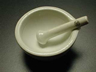
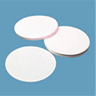

| Material: | ||||
| Clave | Material | Cantidad | Maletín | |
|  | I-RV-MORTEROP-135 | 1 | P | |
|
I-RV-PIPETAGR-002 | 1 | Q | |
|
I-RV-TUBOENSA-012 | 6 | 14 J - 20 L - 16 M | |
|
I-RV-VASOPREC-050 | 5 | L | |
|
I-L3-00EM5210 | 1 | L | |
| I-L3-00ES5600 | 1 | M | ||
|
I-L3-00GR1300 | 1 | Almacén 1 | |
|  | I-L3-00PA1085 | 1 | P | |
|
I-RA-00000HCL-200 | 1 | D | |
|
I-RA-CH3CH2OH-100 | 1 | C | |
|
I-RA-0000NAOH-100 | 1 | B | |
| I-KO-KDSMAXII-000 | 1 | Almacén 2 | ||
| I-KO-0KDS1005 | 1 | I | ||
| -- | -- | 1 | -- | |
| -- | -- | 4 | -- |